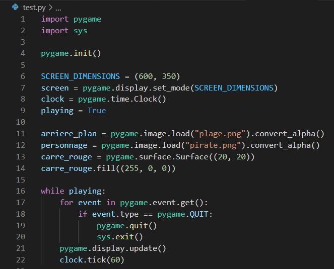
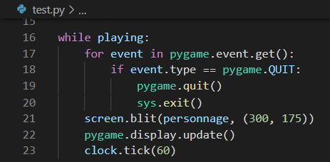
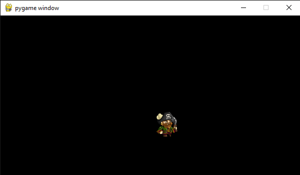
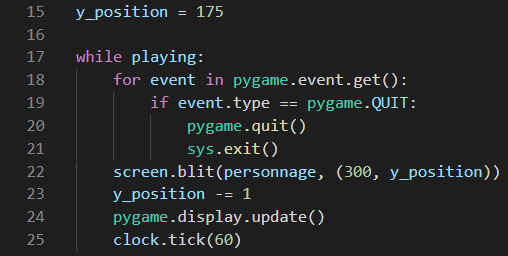
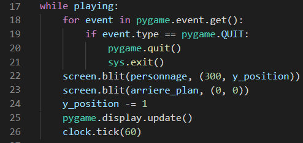
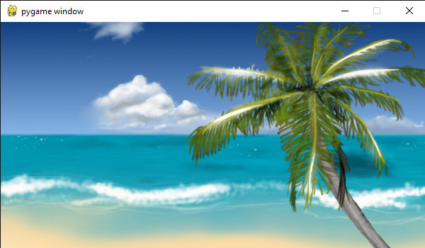
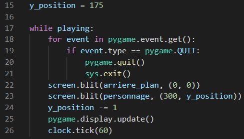

Qu'est-ce qu'une surface ?
Le personnage de votre jeu ? C'est une surface. Les ennemis ? Des surfaces. L'arrière-plan ? Une surface. Les power-ups ? Des surfaces. Les textes du jeu ? Des surfaces également. Même l'écran en lui-même est une surface. Comme nous le constatons, en Pygame "surface" est un terme assez large. Une surface est un objet plaçable dans l'écran qui peut occuper un espace variable et autour de laquelle nous pouvons dessiner des rectangles. Une surface est très souvent stockée dans une variable et correspond généralement à une image importée grâce à pygame.image.load(image). Cependant, il est également possible de créer une surface sans image avec l'instruction pygame.surface.Surface(tuple_dimensions). Prenons par exemple le code suivant :
Nous venons de créer trois surfaces différentes : arriere_plan, personnage, et carre_rouge. Nous découvrons également deux nouvelles méthodes associées aux surfaces : convert_alpha() et fill(couleur). La première méthode permet simplement de convertir l'image importée en un format plus adapté pour Pygame. Le changement produit est à peine visible en apparence mais il sera tout de même hautement recommandé d'utiliser convert_alpha() à chaque fois que nous voudrons importer une image. La seconde méthode fill(couleur) permet de remplir une surface d'une couleur de notre choix. Dans l'exemple, nous avons utilisé le codage RGB, donc un tuple contenant trois valeurs associées précisement à l'intensité du rouge, du vert, puis du bleu. Mais cette méthode, tout comme l'instruction pygame.surface.Surface(tuple_dimensions), sera souvent peu utilisée, car si nous voulons un beau jeu, nous utiliserons principalement des images avec plein de couleurs différentes que des carrés ou des retcangles monochromes.
Transférer une image vers l'écran
Un problème persiste, si nous éxecutons le code çi-dessus, rien ne s'affichera à l'écran. La raison est très simple, nous avons créé des surfaces mais nous n'avons jamais explicitement ordonné au programme d'afficher quoi que ce soit à l'écran. Mais comment fait-on cela ? Nou avons déjà donné la réponse dans la page précèdente : la méthode blit(surface, position). Mais comment et où utiliser cette méthode ? Essayez de deviner. Vous avez la réponse ? Tant mieux ! La méthode blit est une méthode appartenat à notre écran. Donc, selon l'exemple çi-dessus et en supposant que nous souhaitons placer notre personnage au centre de l'écran, nous écrirons screen.blit(personnage, (300, 175)). Mais où inclure cette instruction ? Dans la boucle principale du jeu évidemment ! Pour que votre programme soit bien organisé, je conseille personnellement d'écrire toutes les instructions blit vers la fin de la boucle, juste avant pygame.display.update(). Comme ceçi :
  CodeRésultatEt voilà ! Nous avons réussi à faire apparaître le personnage de notre jeu à l'écran. Toutefois si vous avez l'oeil, vous remarquerez que notre personnage n'est pas tout à fait au centre de l'écran. Pourtant, les coordonnées sont correctes, (300; 175) correspond bel et bien au point central de l'écran. Mais là n'est pas le problème. En fait, il faut savoir que, tout comme l'écran, l'origine d'une surface est son coin supérieur gauche. Ainsi, c'est le coin supérieur gauche de notre personnage qui est placé au point (300; 175). On pourra remédier à ce problème plus tard à l'aide des rectangles. Mais pour l'instant, j'ai un exercice pour vous : je veux que vous fassiez en sorte que le personnage affiché à l'écran se déplace automatiquement vers le haut. Indice : aidez-vous de la méthode blit et d'une variable correspondant à la coordonnée y du personnage.
 Survoler pour voir la correctionRésultat attenduCa bouge ! Excellent ! Petit problème, notre personnage laisse une étrange traînée derrière lui. En fait, nous dessinons des images mais celles-ci ne s'effacent pas automatiquement. Pour faire disparaître les anciennes images, il faut dessiner une nouvelle image sur celle-ci. Ainsi, les nouvelles images écrasent les anciennes. Pour illustrer cela, nous utiliserons l'image d'arrière plan du jeu que nous avons importé :
  CodeRésultatArrière-plan
Mais... mais... où est donc passé notre personnage ? Malgré l'instruction blit à la ligne 22, notre personnage n'est plus du tout affiché à l'écran. Le problème est içi dans l'ordre des instructions. Nous affichons un nouvel arrière-plan qui couvre l'intégralité de l'écran APRES avoir dessiné une nouvelle image de notre personnage. Ainsi, la nouvelle image de notre personnage (en plus des anciennes) est recouverte par l'arrière plan. Il est donc essentiel de comprendre que la première surface à dessiner à l'écran est l'arrière-plan. Si celui-ci est une image, il faudra écrire AVANT toutes les autres instructions blit : variable_ecran.blit(image_arriere_plan, (0, 0)). Les dimensions de l'image utilisée devront également correspondre aux dimensions de l'écran et il (son coin supérieur gauche) doit être positioné aux coordonnées (0; 0) afin de couvrir l'intégralité de l'écran. Autrement si l'arrière-plan est une simple couleur, on utilise (encore une fois AVANT d'afficher les autres surfaces) l'instruction variable_ecran.fill(couleur). Maintenant que ces connaissances nous ont été fournies, corrigeons le programme précèdent :
 CodeRésultatConclusion
- On stocke les images que nous importons dans une variable grâce à pygame.image.load(fichier_image).convert_alpha()
- Les images importées sont automatiquement converties en surfaces
- Pour afficher une surface à l'écran, on utilise la méthode variable_ecran.blit(surface, (coordonnée_x, coordonnée_y))
- L'origine d'une surface est son coin supérieur gauche, une surface est donc positionnée par rapport à celui-ci.
- On dessine toujours l'arrière-plan en premier, celui-ci doit être positionné aux coordonnées (0; 0) et ses dimensions doivent correspondre à celles de l'écran afin de recouvrir l'intégralité de celui-ci
Maintenant que vous saviez manipuler des surfaces, amusez-vous ! Commencez par afficher carre_rouge à l'écran puis essayez d'importer plein d'images. Pour trouver de bonnes images pour votre jeu, vous pouvez aller sur le site OpenGameArt (totalement gratuit) ou CraftPix (partiellement gratuit). Dans la prochaine partie, nous aborderons la gestion des évènements alors soyez en forme car les évènements sont l'un des plus gros morceaux de Pygame.